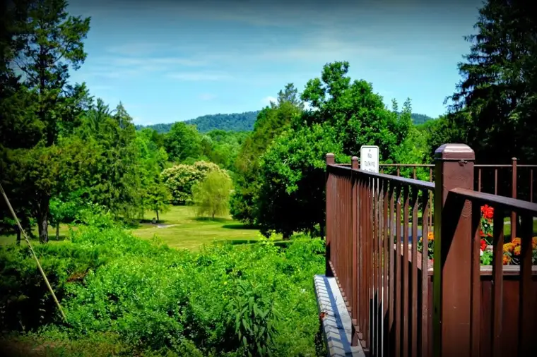
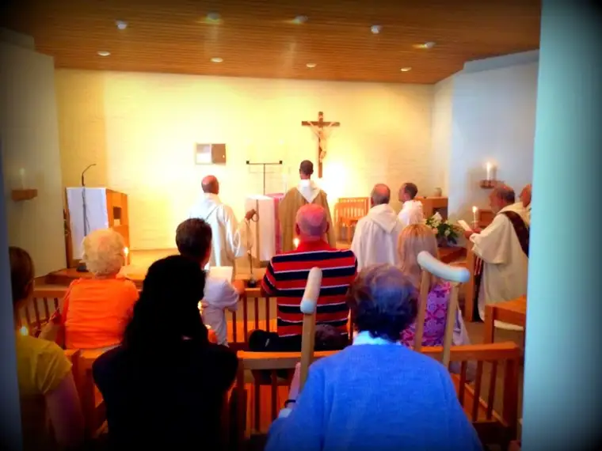

I’d only been returned from my trip South for about ten minutes when I saw the usual stack of mail that awaits a homecoming, including the package, a review copy of a book, I quickly and correctly assumed. As an occasional reviewer and radio host, I’m on several mailing lists to receive books of faith from various publishers. Sometimes I am able to delve into them; sometimes not.
But this one grabbed my attention. Fresh from Kentucky, I was holding a copy of a book filled with the wisdom of Thomas Merton’s journals, Simply Merton, most of which had come from the time he spent as Father Louis at the Trappist monastery in Trappist, Kentucky. It’s been a century now since Merton’s emergence into this world, time to celebrate the best of his work, the publisher determined.
Those who’ve followed my recent journey to the South will understand just why the book felt like gold in my hands. I stared at the cover showing a different angle of the monastery than that to which I’d been privy about a week prior, in awe of the confluence.
{kind=link}
{kind=link}
I have wanted to know a little more about Merton, especially after visiting the monastery where he spent so much time, and now, here it was, unrequested but delivered nonetheless.
{kind=link}
A few years ago, I read an article that was somewhat critical of Merton, and because I want to go into everything with my eyes wide open, it was important to me that, along with reading some of his richest writings, I would also come to a better understanding of what about him bothered some. And now, just today, I happened upon this article, which gave me a clearer understanding of my misgivings.
It helps explain why some Christians approach Merton with some hesitation. At the same time, you’ll see at the end of the piece that his earlier writings are described as “beautiful” and orthodox and worth diving into. I think it’s fair enough that we approach those, even those we admire, with a measure of healthy skepticism, knowing that other than God himself, we are all on a journey, and no one but God is incapable of error.
Nevertheless, I’m still feeling incredibly inspired to have this connection with my journey. Flannery herself mentioned Merton several times in her letters. Though the two never met, they knew of each other, and were aware of the work each was doing. So as I continue to process all that this trip meant, I am discovering that piece of it, and interested in what insights might happen as I go.
 |
| Peek at the grounds, Gethsemani, June 2014. Note the “No Talking” sign. |
{kind=link}
I think in the end, we pilgrims will agree that when we entered the monastery entrance and saw this…
{kind=link}
…we were drawn to it like magnets to a fridge. Look closely at the words above the iron gates; two words that speak so much, and behind them, a beautiful garden of green — as mysterious as the words themselves, which could be pondered for eternity, I would suspect.
To Merton, these words, in part, signified a need for simplicity, to cast aside all encumbrances that might prove to be a hindrance to living for God alone.
 |
| Adoration following Mass at the Abbey of Gethsemani, June 21, 2014 |
{kind=link}
As the author of this collection says in the introduction, the Abbey of Gethsemani “was – and remains today – a place to be free, a place to come and do ‘nothing’ but spend one’s time simply for and with God.”
I am only beginning to ruminate over what they mean to me, but the words pull me in, challenging me to question how I might live out the “God Alone” idea — a challenge I gladly accept.
Q4U: What do the words “God Alone” mean to you?